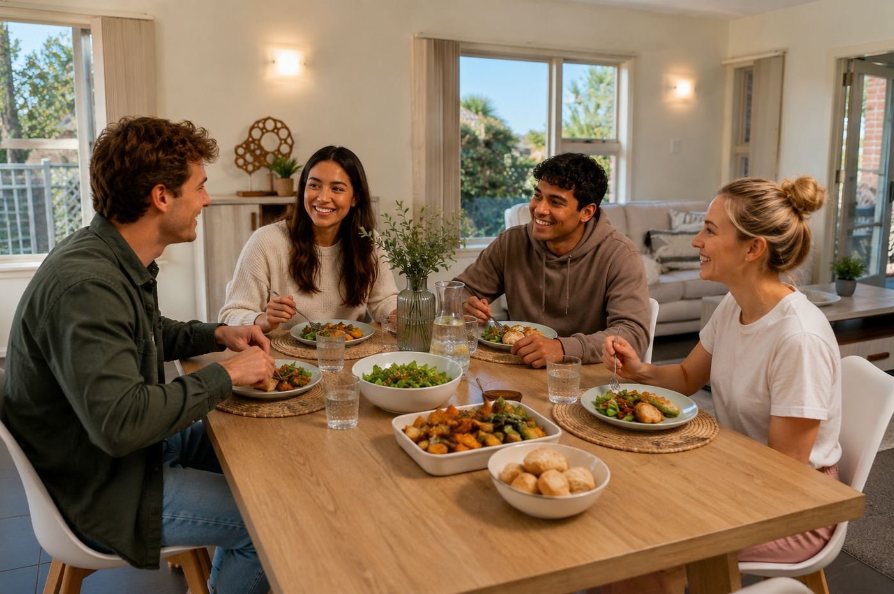
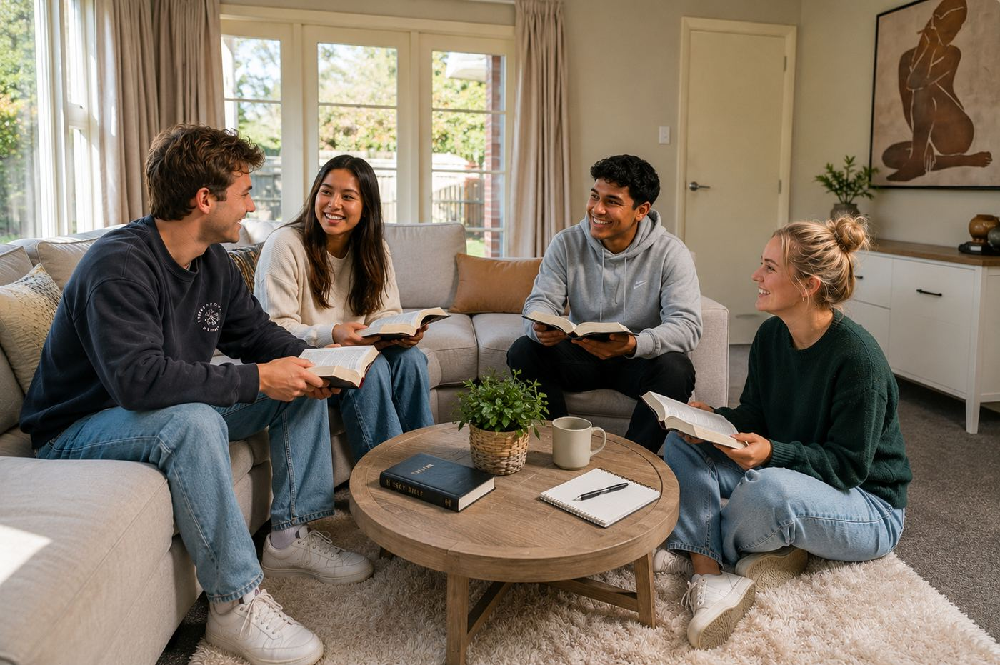

Your home at Kendal House
A warm, well-kept brick home with room to live, study, and grow — close to St Timothy's Church.
Affordable, intentional, and built for community.
Everything you need,
nothing you don't
Kendal House is a solid, spacious brick home set up for shared Christian living. Four bedrooms, generous living areas, a fully equipped kitchen, and a cosy log burner for Christchurch winters — all in Burnside with great transport links.
4 Bedrooms
Comfortable double rooms, with storage, and natural light
Christian Community
Live alongside others who share your faith — growing together in an intentional household
Shared Covenant
A shared commitment to directing life together — rhythms, respect, and Christ at the centre
Great Location
Easy bus access to UC & the city, close to Laidlaw College, next to St Timothy's
Well Priced
$205-$225/wk
Subsidised rent for ministry role holders — affordable for all residents
Church Next Door
With only the vicarage between Kendal House and St Timothy's, it's a very quick walk to church.
A house that's ready for you
Kendal House is a character brick home with modern comforts. Here's what you'll find when you step through the door.
- 4 Bedrooms
- 2 Bathrooms
- 2 Car Garage
- 190m2 House
- Sorry, NO Pets

Warm, welcoming, and made for gathering
The heart of Kendal House. A spacious living room with comfortable sofas and plenty of natural light. This is where Bible studies happen, where movie nights unfold, and where you'll find someone to chat with at the end of a long day.
- Comfortable lounge seating
- Large windows with natural light
- Open-plan flow between living areas
- Furnished (Note: pictured furniture from marketing photo's; actual furniture is different)

Your own space to rest and recharge
Each bedroom at Kendal House is a generous, private space — big enough for a double bed, study desk, and armchair. Natural light, and a calm, inviting feel. Your room is yours to make your own.
- Provide your own bed and desk
- Space for your favourite teddy bear
- Plenty of natural light
- Curtains and carpet throughout

A proper kitchen for proper meals
No tiny kitchenette here. Kendal House has a full-size kitchen with cooking, a double oven, microwave, dishwasher, and plenty of bench and storage space. A cosy log burner in the adjoining dining area keeps the whole space warm through winter. Whether you're cooking solo or preparing a shared flat dinner, there's room for everyone.
- Double wall oven & stove top
- Dishwasher & microwave
- Log burner in dining area
- Generous bench space & storage
- Tiled floors for easy cleaning
- Kitchen fully equipped ready to use

Classic character, solid and warm
Kendal House is a well-maintained 1960s brick bungalow on an easy care section. Off-street parking, a tidy garden, and that solid brick warmth that newer builds just can't match. It's right next door to St Timothy's — you'll walk to church in under a minute.
- Solid brick construction
- Off-street parking
- Garden & outdoor area
- Double Garage
More than flatmates —
a community
Kendal House isn't just about having a roof over your head. It's about doing life together — shared meals, Bible study, movie nights, and genuine friendship rooted in faith. Central to this is our shared covenant that guides our life together and outlines our core house values and expected behaviours.




*Note: People in these images are AI-generated.
Our Shared Values
Our relationships are foundational to creating a loving, supportive, and Christ-centred household where each person can grow spiritually, live responsibly, and contribute positively to the community. To guide our interactions, encourage mutual care, and help us maintain a harmonious and welcoming home for all residents, all residents are asked to commit to these values:
Cultivating a home marked by kindness, forgiveness, and mutual respect.
Communicating truthfully and graciously, fostering openness in all our interactions.
Taking ownership of our actions and seeking reconciliation promptly when conflicts arise.
Valuing each person’s dignity and contributions, fostering a culture of mutual regard and honour.
Actively being involved in the shared life and duties of the household, contributing to a supportive and cooperative environment.
Affordable, transparent,
no surprises
Kendal House is not run for profit — we simply pass on the costs we incur. Here's what to expect financially so you can plan ahead with confidence.
Rent
Rent for 2027 is expected to be approximately $205p/w per room with shared bathroom or $230 p/w for room with ensuite. This includes unlimited fibre broadband. Our tenancy runs from mid-January for 12 months.
Bond
The bond is four weeks' rent, paid in advance when signing the tenancy agreement. This is refunded at the end of the tenancy, less any deductions for damage or unpaid debts.
Insurance
Residents should insure their personal belongings — laptops, phones, musical instruments, gaming consoles, and other valuables. The flat's insurance policy does not cover personal items. Check your policy — sometimes a parent's insurance can cover a dependent's belongings.
Additional Costs
Day-to-day costs for meals, electricity and other house costs are shared across the tenants. If needed, we can help you set up a flat account and discuss practical ways to manage shared expenses.
Move in without the hassle
Bed, mattress, bedside table and wardrobe space
Shared flat bank account for expenses. Free internet provided
Cookware, crockery, and appliances — just bring your appetite
Washing machine and dryer on site
Space for your car if you have one
Weekly shared meal, optional Bible study, and pastoral support
We'd love to hear from you.
Whether it's a place to live, a role to grow into, or both — get in touch and let's have a chat about what fits.